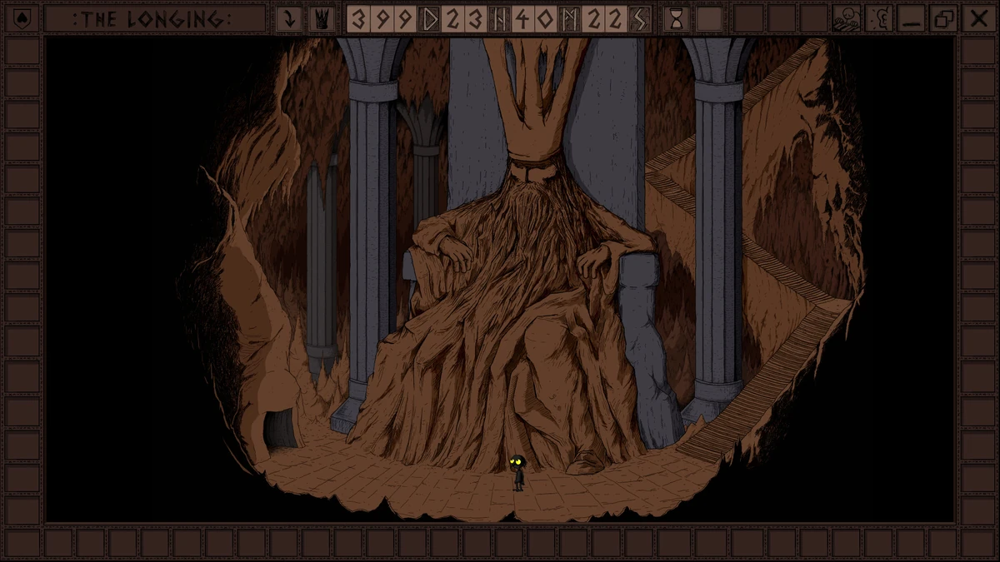
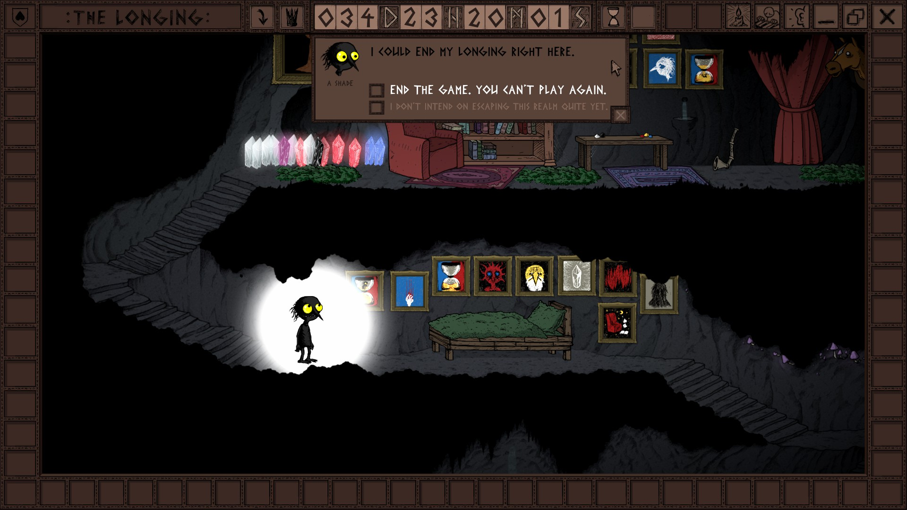
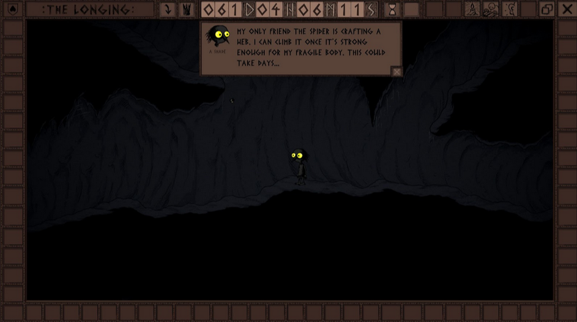
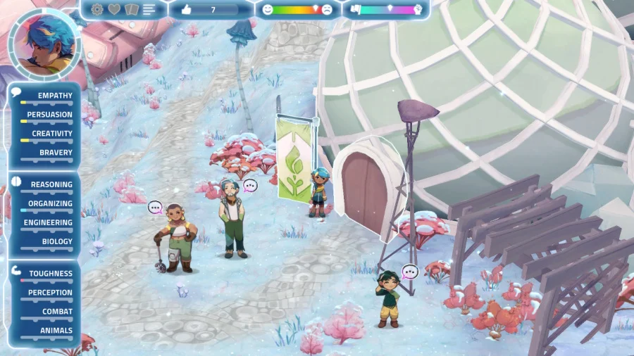
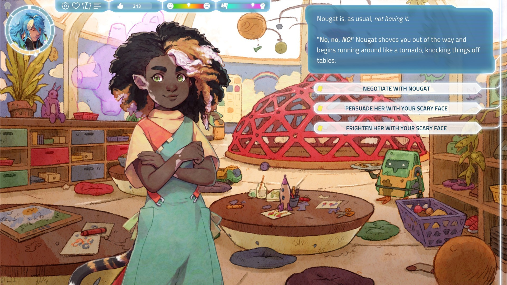
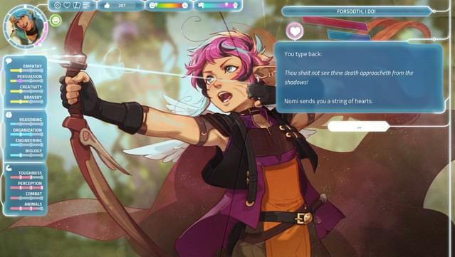
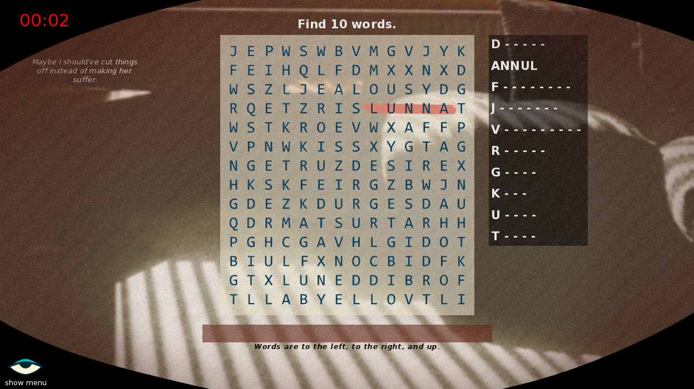
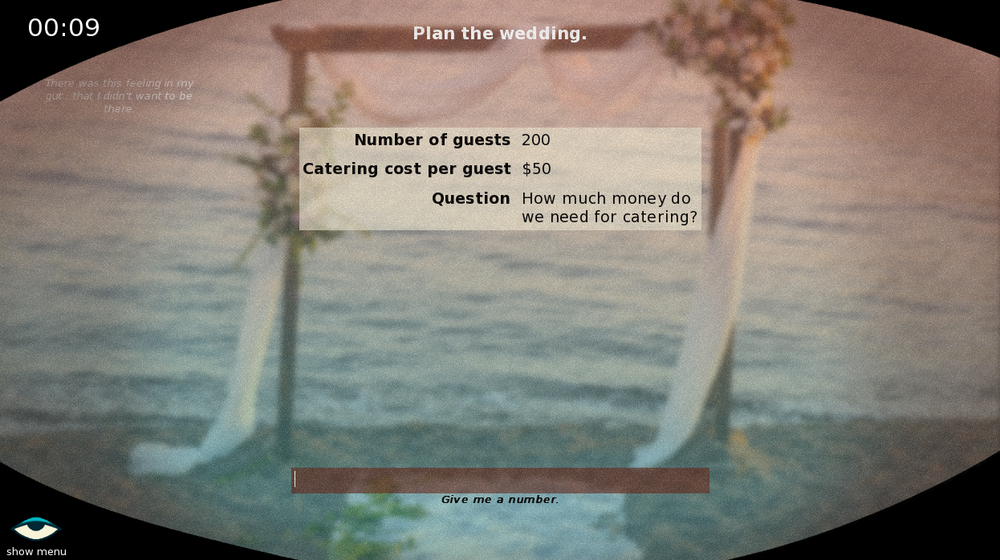

9/28/24 - Preliminary Research Brief
1) Art/Design Precedents:
Blade Runner 2049
- Year of Creation: 2017
- Director: Denis Villeneuve
- Media type: Movie
- Representative Image(s):
The Longing
- Year of Creation: 2019
- Director: Studio Seufz
- Media type: Game
- Representative Image(s):



Dungeons and Dragons
- Year of Creation: 1974
- Creator: Gary Gygax, Dave Arneson
- Media type: Game
- Representative Image(s):
 I was a Teenage
Exocolonist
I was a Teenage
Exocolonist
- Year of Creation: 2022
- Director: Northway Games
- Media type: Game
- Representative Image(s):



EVERY TIME YOU BLINK
- Year of Creation: 2022
- Director: Robobarbie
- Media type: Game
- Representative Image(s):


2) Media Research:
-Unity
-Godot
I am already familiar with Unity, but need to experiment with Godot to see if it might be better suited for
my project.
3) An Annotated Bibliography:
- Books -
Corneliussen, Hilde, and Jill Walker Rettberg. Digital Culture, Play, and Identity: A World of Warcraft
Reader.
Cambridge, MA: MIT Press, 2011.
- This book contains analyses on the MMOG World of Warcraft by contributors that have played hundreds of
hours. These contributors comment on the cultural and social implications of digital gameworlds, examining
the ways it
reflects the
real world. Each contributor comes at it from different perspectives, such as game design, gender studies,
textual
analysis, and postcolonial studies. I’m hoping that looking at the similarities and differences between game
worlds and
real worlds, especially concerning a game that is known for its immersive and addictive quality, will help
provide some
insight into what draws players to creating escapist fantasies.
Muriel, Daniel, and Garry Crawford. Video games as culture: Considering the role and importance of video
games in
Contemporary Society. Abingdon, Oxfordshire: Routledge, 2018.
- This book covers topics regarding the ways that video games have been integrated into our social lives and
culture. I’m
hoping that this book will provide some context into the ways that games can fill in the gaps where irl life
comes short
and provide more connection or comfort.
- Articles -
Granic, I., Lobel, A., & Engels, R. C. M. E. (2014). “The benefits of playing video games”. American
Psychologist,
69(1), 66–78. https://doi.org/10.1037/a0034857
- This article uses insights from developmental, positive, social psychology, and media psychology to debunk
video games
being inherently harmful. The argument seems to be that video games may foster real-world psychosocial
benefits. I’m
hoping this article covers some form of positive escapism/relief through gaming that I can use to guide my
game.
Hagström, D., & Kaldo, V. (2014). “Escapism among players of MMORPGs--conceptual clarification, its relation
to mental
health factors, and development of a new measure. Cyberpsychology, behavior and social networking”, 17(1),
19–25.
https://doi.org/10.1089/cyber.2012.0222
-This article looks into escapism’s effect on the mental health of MMORPG players. It seems to skew
negative, but I’m
still hoping that I can use this data to better understand escapism through gaming and shape my argument.
Király, Orsolya, Dénes Tóth, Róbert Urbán, Zsolt Demetrovics, and Aniko Maraz. "Intense Video Gaming is Not
Essentially
Problematic." Psychology of Addictive Behaviors 31, no. 7 (11, 2017): 807-817.
https://doi.org/10.1037/adb0000316.
-This source reports on how spending long periods of time gaming is not necessarily problematic. It also
touches on
gaming as an escape from reality. Could have some interesting data on players who use gaming as an escape
from reality.
Reinecke, L. (2009). “Games and recovery: The use of video and computer games to recuperate from stress and
strain”.
Journal of Media Psychology: Theories, Methods, and Applications, 21(3), 126-142.
https://doi.org/10.1027/1864-1105.21.3.126
-Talks about how games can be used as a way to rest after stress and strain. Seems to cover this in a
positive way. It
also provides information on what kinds of people are most susceptible to this type of coping. This article
could
provide context for the message of my game.
Deleuze, Jory, Pierre Maurage, Adriano Schimmenti, Filip Nuyens, André Melzer, and Joël Billieux. “Escaping
Reality
through Videogames Is Linked to an Implicit Preference for Virtual over Real-Life Stimuli.” Journal of
Affective
Disorders 245 (February 2019): 1024–31. https://doi.org/10.1016/j.jad.2018.11.078.
-This study looks into whether virtual environments are preferred over real world ones and the effect that
has on people.
It calls for a better understanding and refinement of the concept of escapism. This study could be used to
better place
my game within an already existing conversation.
Morosan, Sarah Aura. "Rise Up Gamers: The Lived Experience of Fantasy and Escapism in Role-Playing Video
Games." Order
No. 30419178, The Chicago School of Professional Psychology, 2023.
-This article looks at the positive ways that people can use role playing and immersion. It talks in depth
about the
different types of motives and how that affects the user. All in all, I think it provides a lot of contexts
in which I
could choose to explore this topic.
4) People to interview:
Nyusha Iampolski - Dev of Normal Bad Sex
-Suggested by Alexander, could reach out to ask about unconventional game design as well as creating based
on
personal
experience.
Friends/people I know who play a lot of games/mmos?
-Could ask about their personal experiences with games and how it’s impacted their lives/what drives them to
play/what
these games mean to them.